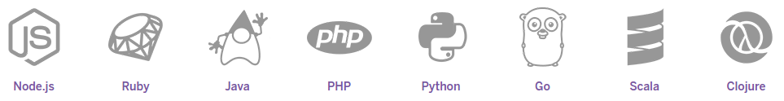

Language support
But... how it works?

APP
=
SOURCE
CODE
CODE
+
DEPENDENCY
DESCRIPTION
DESCRIPTION
+
PROCFILE
web: java -jar lib/foobar.jar $PORT
queue: java -jar lib/queue-processor.jar
Deployment methods
- Git
$ git push heroku master
Build process
Language specific
- Retriving dependencies
- Creating assets
SOURCE CODE
+
DEPENDENCIES
+
OUTPUT OF BUILD
+
LANGUAGE/FRAMEWORK
=>
BUILDPACK
=>
SLUG
Isolated, virtualized Unix containers, that provide the environment required to run an application
$ heroku ps:scale web=3 queue=2
Dyno formation: total number of currently-executing dynos
One-off dynos
Temporary dynos that run with their input/output attached to your local terminal
$ heroku run bash
Config
- Everything that is likely to vary between environments
- Stored outside the app in config vars
Add-ons
Cloud services that can be attached to an app extending its functionality
Release
SLUG
+
CONFIG
+
ADD-ONS
Heroku maintains an append-only ledger of releases you make
Logging and monitoring
Heroku treats logs as streams of time-stamped events
Logplex automatically collates log entries from all the running dynos and Heroku platform components, providing a single source of activity
$ heroku logs
2013-02-11T15:19:10+00:00 heroku[router]: at=info method=GET path=/articles/custom-domains host=mydemoapp.heroku.com fwd=74.58.173.188 dyno=web.1 queue=0 wait=0ms connect=0ms service=1452ms status=200 bytes=5783
2013-02-11T15:19:10+00:00 app[web.2]: Started GET "/" for 1.169.38.175 at 2013-02-11 15:19:10 +0000
2013-02-11T15:19:10+00:00 app[web.1]: Started GET "/" for 2.161.132.15 at 2013-02-11 15:20:10 +0000